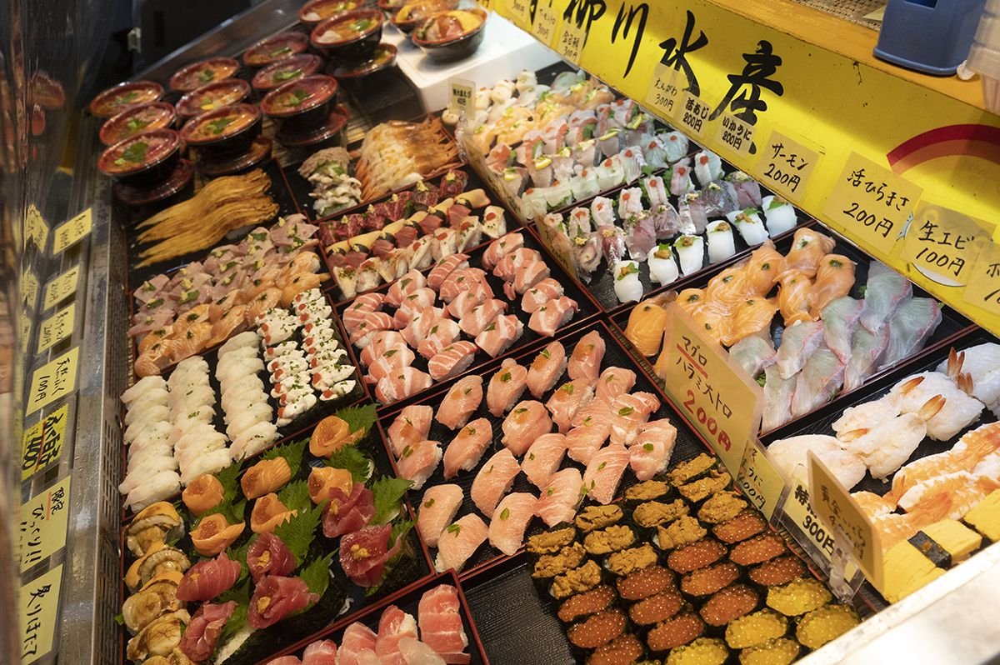
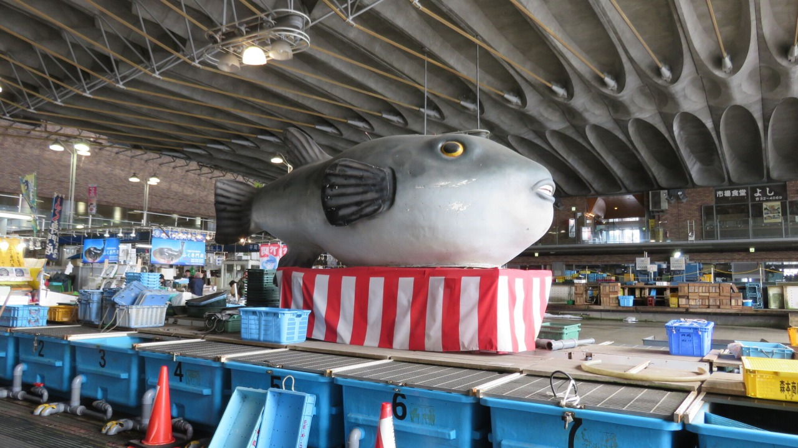
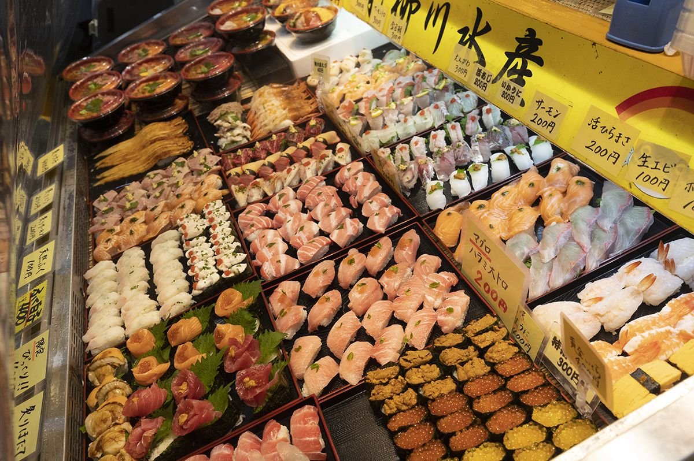
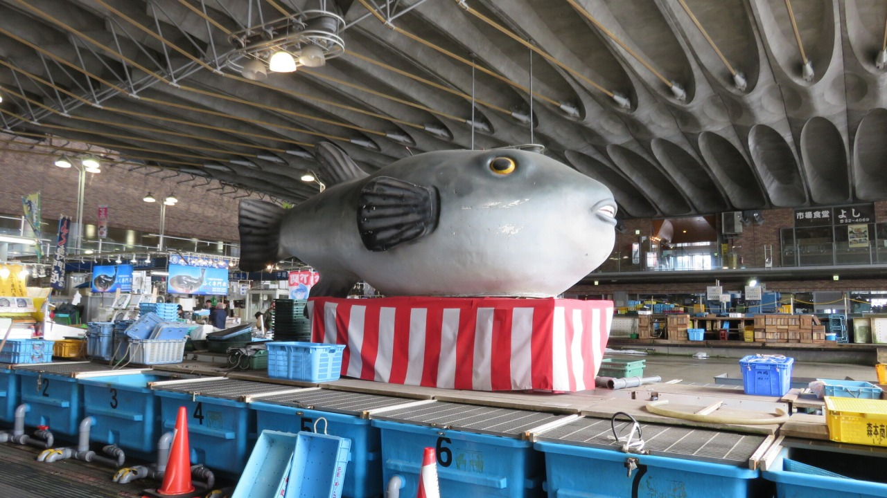
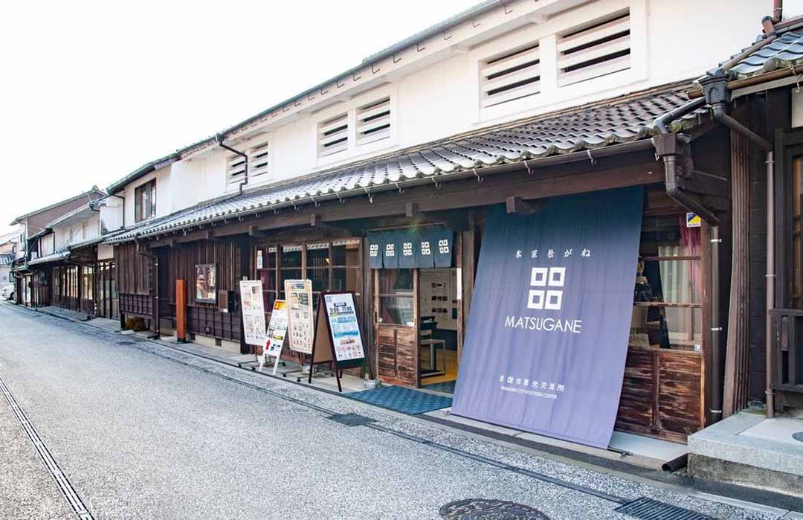
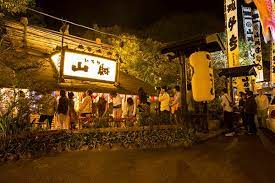
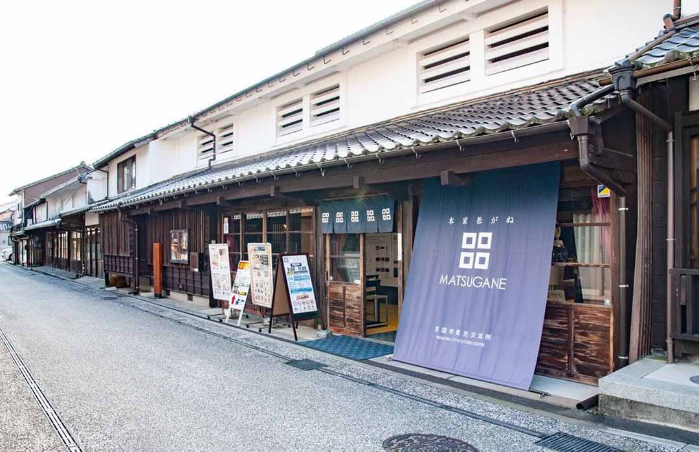
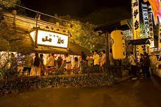

山口県は自然豊かな場所です。せっかく観光するのならそういった自然を楽しみながら、ドライブや食事を楽しんでいただければなと思います。
下関市は福岡とつながっている部分で個人的には山口を回るならまず外せないところなのかなと思っています。
 



自分は早朝から出発し唐戸市場に行きました！お寿司などの海鮮がその場で選んで食べることができるのでなかなか楽しいしぜひ山口旅行するなら来てほしいと思う場所です!
※金土日しか開催してないので注意
住所：山口県下関市
唐戸町 ５－５０
営業時間：
金曜日・土曜日/午前１０時～午後３時
日曜日・祝日 /午前８時～午後３時
※開催店舗及び終了時間は、ネタの仕入れ状況によって異なります。
また、すぐ隣には遊園地だったり水族館などもあります！
住所：山口県下関市
あるかぽーと１−４０
営業時間：
月～金曜日/午前１１時～午後９時
土曜日・日曜日 /午前１０時～午後９時
住所：山口県下関市
あるかぽーと６－１
営業時間：
９時３０分～１７時３０分
岩国市は先ほど紹介した下関と真反対の位置にあります。正直錦帯橋といろり山賊を楽しみに行く場所だと思っていますが山口に来たならぜひという感じでございます！
 



いろり山賊は綺麗な景色を見ながらご飯を食べることができ、山口市からだと行くのは少し大変なんですが日々の疲れだったりが癒されてとてもいい場所だったなと感じているので気分転換に行ってみるのもありだと思います！
住所：山口県岩国市
岩国１丁目２

住所：山口県岩国市
玖珂町１３８０−１
営業時間：
１０時００分～２３時００分
定休日 火曜日、水曜日
紹介したほかにも色々楽しい場所やいい場所はあると思います！よき山口ライフを！